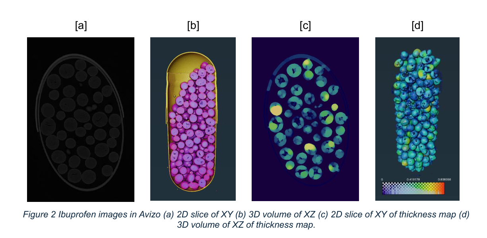
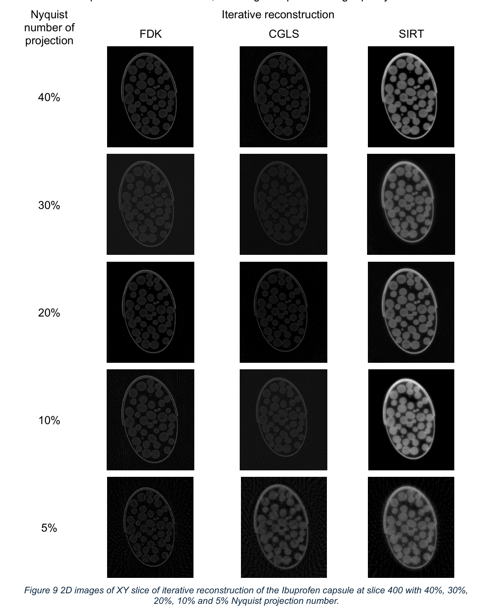
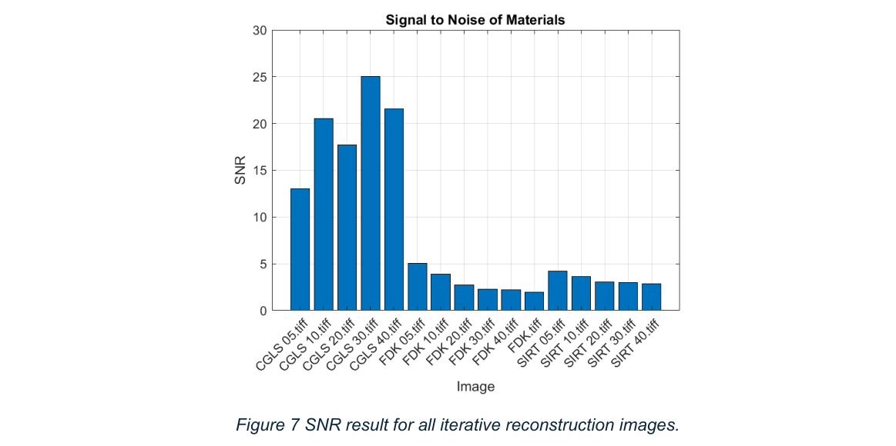
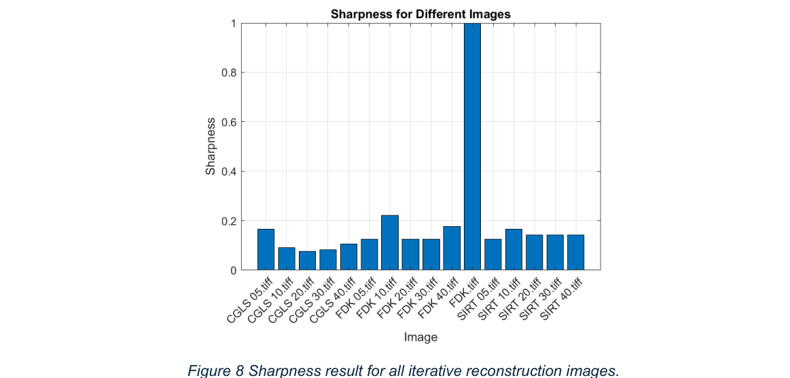
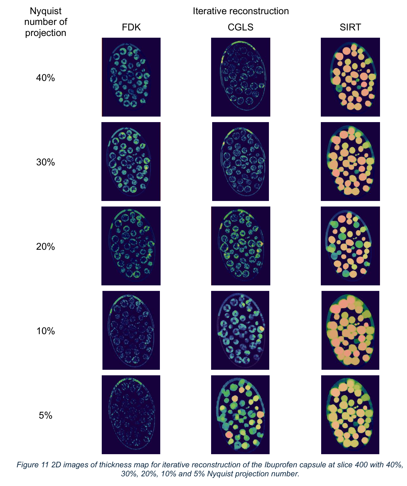
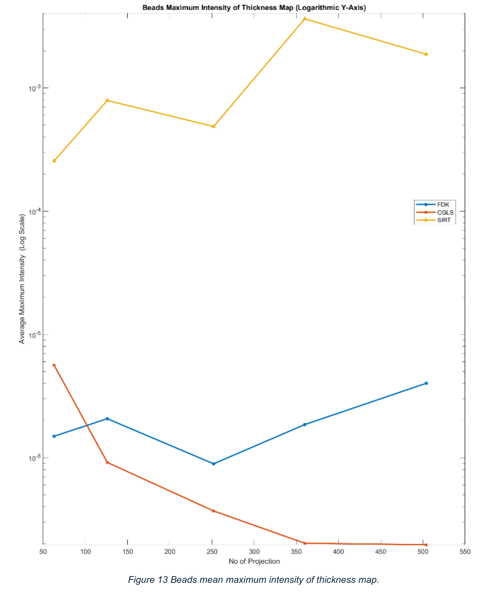

High-quality 3D X-ray scans (CT scans) are essential for checking the internal structure of pharmaceutical products, but they are often incredibly slow to produce. There is a constant tug-of-war between scan time and image quality: scan too quickly, and the resulting images become too blurry or noisy to be useful for research.
I analysed a 3D X-ray dataset of an ibuprofen capsule (800×800 pixel field of view, 22μm effective pixel size) to see how much scan data could be cut before the reconstructed images became unreliable. I compared a fast, standard reconstruction formula (FDK, Feldkamp-Davis-Kress) against two "iterative" methods, CGLS and SIRT, that refine the image step by step, simulating scenarios down to just 5% of the projections normally required for a clean scan.
Before running the comparison, I first had to determine the optimal centre of rotation using signal-to-noise and edge-sharpness measures, and build explicit "stopping rules" so the iterative methods would halt once image sharpness plateaued for at least three consecutive iterations, rather than over-refining and introducing new artefacts.
| Nyquist projection level | Projections used | Reduction factor |
|---|---|---|
| 40% | 504 | 5× |
| 30% | 360 | 7× |
| 20% | 252 | 10× |
| 10% | 126 | 20× |
| 5% | 63 | 40× |






More processing isn't always better. I had to implement specific stopping rules to prevent the reconstruction algorithms from over-refining and introducing new errors once sharpness had plateaued. This project taught me how to balance computational effort against the physical realities of X-ray imaging, and how the "best" reconstruction algorithm depends on the task: CGLS for edge detail and noise control, SIRT for quantitative accuracy in dose-critical measurements.